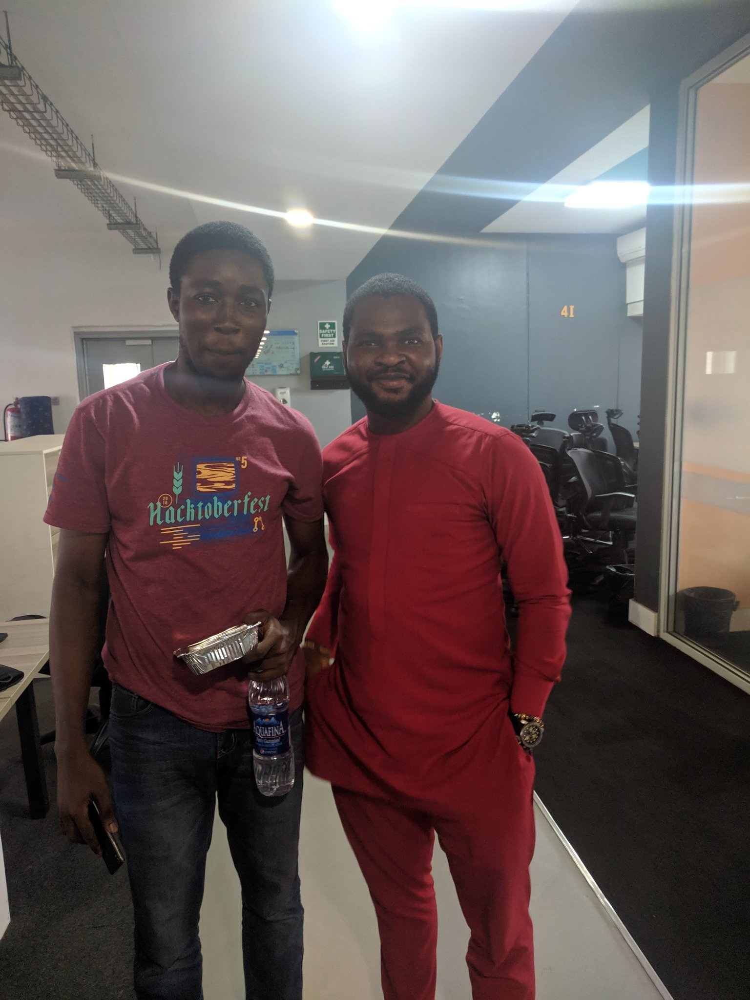
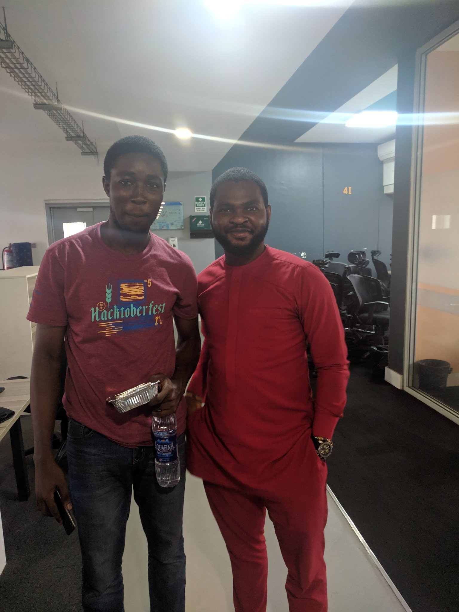

Media 101
Media is a way to communicate with the masses. It is a way to reach out to people and let them know what is happening around the world. Media is a way to inform people about the latest happenings and events. It is a way to educate people and make them aware of the world around them. Media is a way to entertain people and make them happy. Media is a way to inspire people and motivate them to do great things. Media is a way to connect people and bring them together. Media is a way to change the world
 
